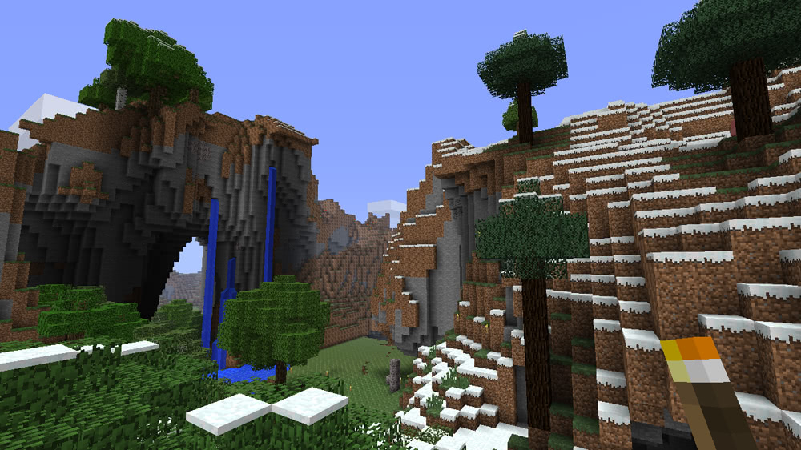
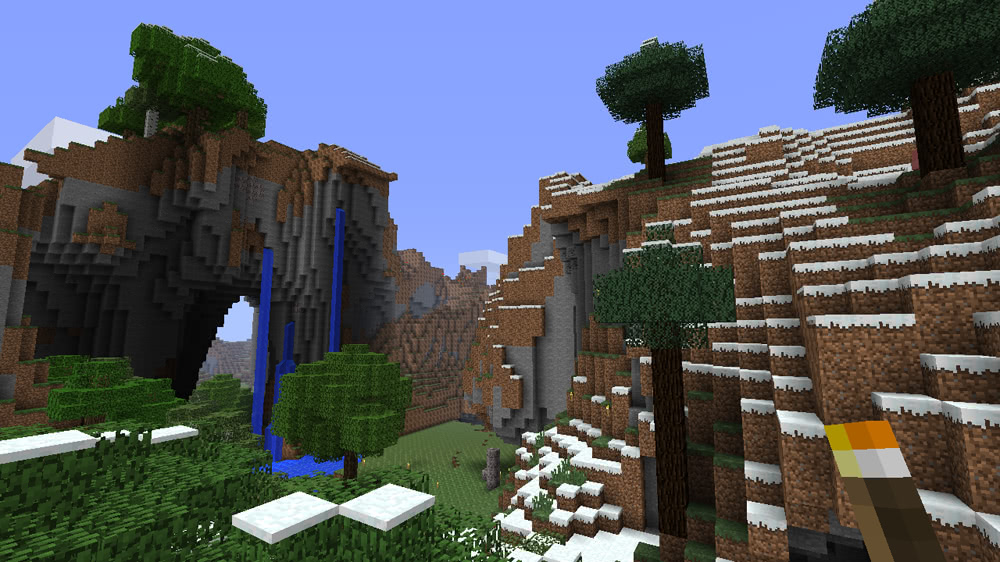
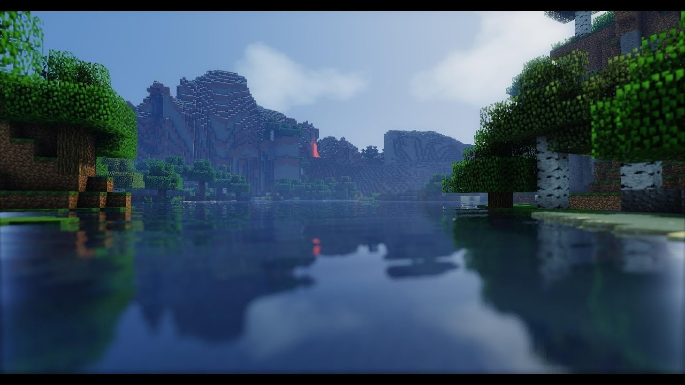
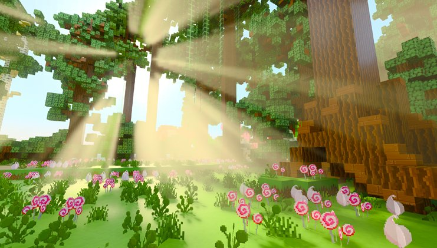
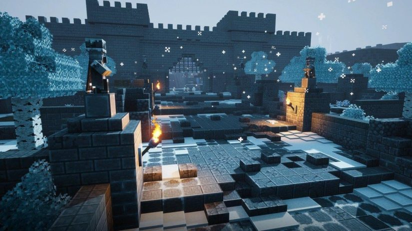

Скриншоты Майнкрафт
свернуть ->Натуральный Майнкрафт

 

Майнкрафт с шейдерами
  
Создатель страницы: Алексей Соколов
Дата:16.02.2021
Мои соцсети:
Почта: anonim.neizvestno.99@list.ru Ютуб: Сервер по майнкрафту (IP): a4.spb.ru:25564 - С версии 1.16.4 на компютерах на пиратской или на оффициальной версии.